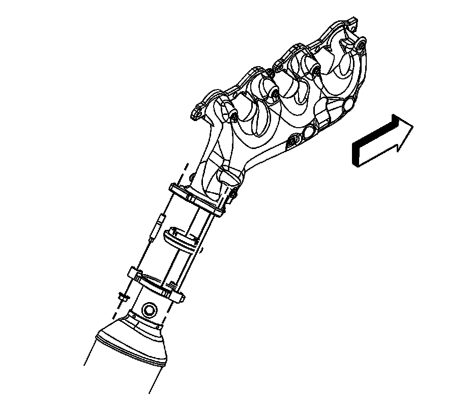

Exhaust Manifold Replacement - Right Side
Exhaust Manifold Replacement - Right Side

1. Drain the cooling system, if equipped with rear air conditioning (A/C). Refer to Draining and Filling Cooling System (Vac-N-Fill).
2. Remove the ignition coils.
3. Remove the spark plugs.
4. Remove the oil level indicator tube.
5. Remove the heated oxygen sensor (HO2S).
6. Remove the catalytic converter to exhaust manifold nuts. (1500 series shown, 2500 series similar).
7. Lower the vehicle.

8. If equipped with rear A/C perform the following steps, otherwise proceed to step 15.
9. Reposition the radiator surge tank outlet hose clamp at the water pump (1).
10. Remove the radiator surge tank outlet hose (2) from the water pump.
11. Reposition the outlet hose out of the way.

12. Reposition the heater inlet hose clamp (1) at the water pump.
13. Remove the heater inlet hose (2) from the water pump.
14. Reposition the inlet hose out of the way.

15. Remove the exhaust manifold bolts and exhaust manifold.
16. Remove and discard the exhaust manifold gasket.
17. Remove the exhaust seal from the exhaust manifold.
Installation Procedure
Important:
^ Tighten the exhaust manifold bolts as specified in the service procedure. Improperly installed and/or leaking exhaust manifold gaskets may affect vehicle emissions and/or On-Board Diagnostics (OBD) II system performance.
^ The cylinder head exhaust manifold bolt hole threads must be clean and free of debris or threadlocking material.
^ Do not apply sealant to the first 3 threads of the bolt.
1. Install the exhaust seal to the exhaust manifold.
2. Apply a 5 mm (0.2 in) wide band of threadlock GM P/N 12345493 (Canadian P/N 10953488), or equivalent to the threads of the exhaust manifold bolts.
3. Position the NEW exhaust manifold gasket and exhaust manifold to the cylinder head.
Notice: Refer to Fastener Notice.
4. Install the exhaust manifold bolts.
1. Tighten the bolts a first pass to 15 N.m (11 lb ft). Tighten the exhaust manifold bolts beginning with the center 2 bolts. Alternate from side-to-side, and work toward the outside bolts.
2. Tighten the bolts a final pass to 20 N.m (15 lb ft). Tighten the exhaust manifold bolts beginning with the center 2 bolts. Alternate from side-to-side, and work toward the outside bolts.
5. Using a flat punch, bend the gasket tab at the rear of the gasket around the cylinder head edge.
6. If equipped with rear A/C perform the following steps, otherwise proceed to step 15.
7. Position the inlet hose.
8. Install the heater inlet hose (2) to the water pump.
9. Position the heater inlet hose clamp (1) at the water pump.
10. Position the outlet hose.
11. Install the radiator surge tank outlet hose (2) to the water pump.
12. Position the radiator surge tank outlet hose clamp at the water pump (1).
13. Raise and support the vehicle.
14. Install the catalytic converter to exhaust manifold nuts. (1500 series shown, 2500 series similar).
Tighten the nuts to 50 N.m (37 lb ft).
15. Install the HO2S. Refer to Heated Oxygen Sensor Replacement - Bank 2 Sensor 1 (1500 Series) Heated Oxygen Sensor Replacement - Bank 2 Sensor 1 (2500 Series).
16. Lower the vehicle.
17. Install the oil level indicator tube.
18. Install the spark plugs.
19. Install the ignition coils.
20. Fill the cooling system. Refer to Draining and Filling Cooling System (Vac-N-Fill).